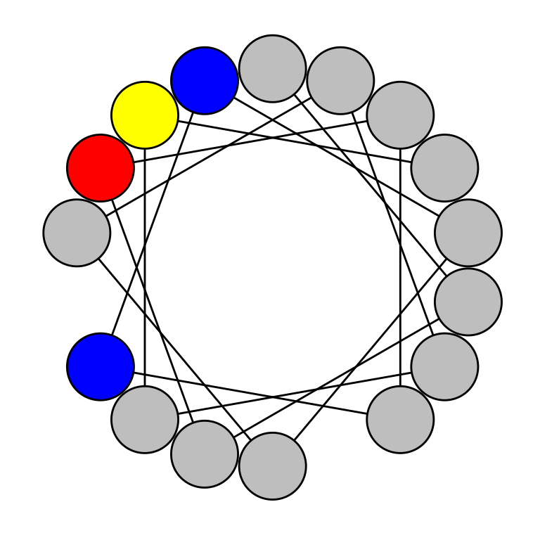
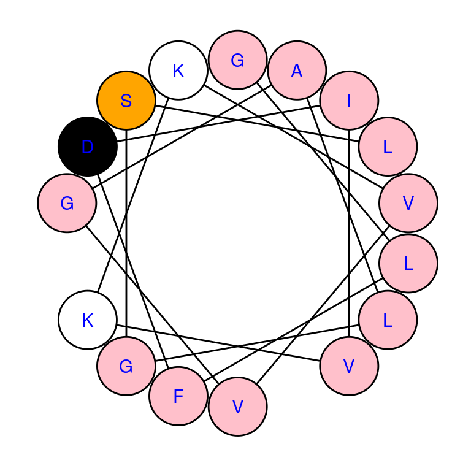
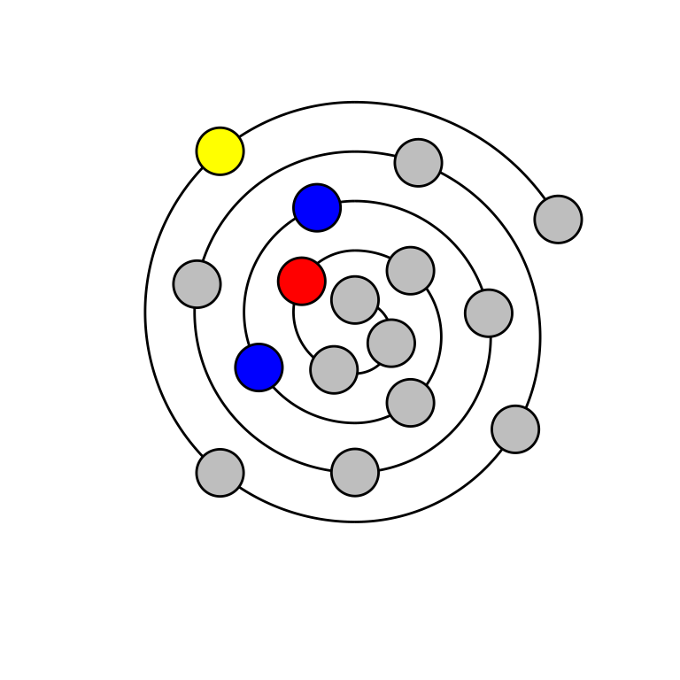

vignettes/intro.Rmd
intro.RmdThe following code loads the helixvis package and the sample data that comes with it - these will be used later in this vignette.
The helixvis R package allows users to construct 2-dimensional visualizations of 3-dimensional \(\alpha\)-helical oligopeptides in a programmatic, reproducible manner. Currently, helixvis implements visualization of helical wheels, introduced by Schiffer and Edmundson (1967), and wenxiang diagrams, introduced by Chou, Zhang, and Maggiora (1997).
A prototypical \(\alpha\)-helix has approximately 3.6 residues per turn (Pauling, Corey, and Branson 1951), implying a 100\(^\text{o}\) rotation between consecutive residues. After 18 rotations, the 19th residue returns to the same angle as the 1st residue. Since helical wheels place all residues at an equal radius away from the center, having the same angle of rotation would cause complete overlap of the 1st and 19th residues. As such, helical wheels are limited to plotting 18 residues in a single turn, although some tools do allow for plotting of more than 1 turn (Gautier et al. 2008). For consistency, we also limit wenxiang diagrams to 18 residues.
Helical wheels provide a bird’s eye view of an \(\alpha\)-helical peptides and are particularly helpful at highlighting prominent hydrophobic faces to explain a large hydrophobic moment (Eisenberg, Weiss, and Terwilliger 1982; Dathe et al. 1997) and design antimicrobial peptides (Chen et al. 2005; Jiang et al. 2011).
With helixvis, generating helical wheels takes a single line of code, as follows.
# print sequence that will be drawn
print(sequence[1, ])
#> Name Seq
#> 1 Polyphemusin-1 RRWCFRVCYRGFCYRKCR
# draw helical wheel
draw_wheel(sequence$Seq[1])
By default: nonpolar residues (e.g. glycine, tryptophan) will be colored grey; polar residues (e.g. serine, threonine) will be colored yellow; acidic residues with a negative charge at physiologic pH (e.g. aspartic acid, glutamic acid) will be colored red; and basic residues with a positive charge at physiologic pH (e.g. lysine, arginine) will be colored blue. This color scheme can be modified using the col parameter, which accepts a character vector with 4 elements, each of which must be an element of grDevices::colors(). The one-letter code for each residue can also be overlaid on each residue by setting the labels parameter to TRUE.
# draw helical wheel with custom color scheme
draw_wheel(sequence$Seq[1], col = c("pink", "orange", "white", "black"),
labels = TRUE, label.col = "blue")
Wenxiang diagrams are quite similar to helical wheels, with the exception that distance from the first residue is denoted by distance from the center of the spiral. Thus, wenxiang diagrams visually provide the order of amino acids in the sequence. The code used to generate wenxiang diagrams is analogous to that for generation of helical wheels.
The following code blocks and figures reproduce the figures from the Helical Wheel section, redrawn as wenxiang diagrams.

Current development of helixvis is focused on the following:
Chen, Y, C T Mant, S W Farmer, R E W Hancock, M L Vasil, and R S Hodges. 2005. “Rational Design of Alpha-Helical Antimicrobial Peptides with Enhanced Activities and Specificity/Therapeutic Index.” J Biol Chem 280 (13): 12316–29. https://doi.org/10.1074/jbc.M413406200.
Chou, K C, C T Zhang, and G M Maggiora. 1997. “Disposition of Amphiphilic Helices in Heteropolar Environments.” Proteins 28 (1): 99–108. https://doi.org/10.1002/(SICI)1097-0134(199705)28:1<99::AID-PROT10>3.0.CO;2-C.
Dathe, M, T Wieprecht, H Nikolenko, L Handel, W L Maloy, D L MacDonald, M Beyermann, and M Bienert. 1997. “Hydrophobicity, Hydrophobic Moment and Angle Subtended by Charged Residues Modulate Antibacterial and Haemolytic Activity of Amphipathic Helical Peptides.” FEBS Lett 403 (2): 208–12. https://doi.org/10.1016/S0014-5793(97)00055-0.
Dunnill, P. 1968. “The Use of Helical Net-Diagrams to Represent Protein Structures.” Biophys J 8 (7): 865–75. https://doi.org/10.1016/S0006-3495(68)86525-7.
Eisenberg, D, R M Weiss, and T C Terwilliger. 1982. “The Helical Hydrophobic Moment: A Measure of the Amphiphilicity of a Helix.” Nature 299: 371–74.
Gautier, R, D Douguet, B Antonny, and G Drin. 2008. “HELIQUEST: A Web Server to Screen Sequences with Specific Alpha-Helical Properties.” Bioinformatics 24 (18): 2101–2. https://doi.org/10.1093/bioinformatics/btn392.
Jiang, Z, A I Vasil, L Gera, M L Vasil, and R S Hodges. 2011. “Rational Design of Alpha-Helical Antimicrobial Peptides to Target Gram-Negative Pathogens, Acenitobacter Baumannii and Pseudomonas Aeruginosa: Utilization of Charge, Specificity Determinants, Total Hydrophobicity, Hydrophobe Type and Location as Design Parameters to Improve the Therapeutic Ratio.” Chem Biol Drug Des 77 (4): 225–40. https://doi.org/10.1111/j.1747-0285.2011.01086.x.
Pauling, L, R B Corey, and H R Branson. 1951. “The Structure of Proteins: Two Hydrogen-Bonded Helical Configurations of the Polypeptide Chain.” Proc Natl Acad Sci USA 37 (4): 205–11. https://doi.org/10.1073/pnas.37.4.205.
Schiffer, M, and A B Edmundson. 1967. “Use of Helical Wheels to Represent the Structures of Proteins and to Identify Segments with Helical Potential.” Biophys J 7 (2): 121–35. https://doi.org/10.1016/S0006-3495(67)86579-2.